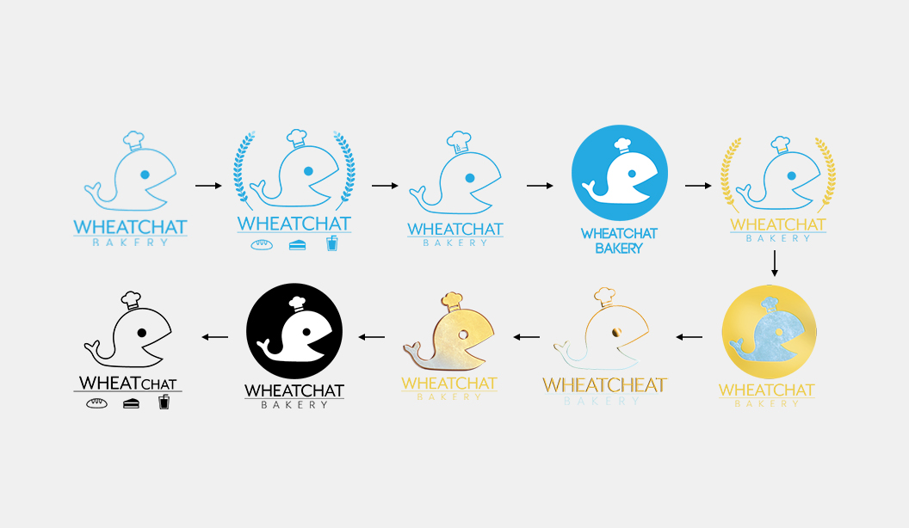
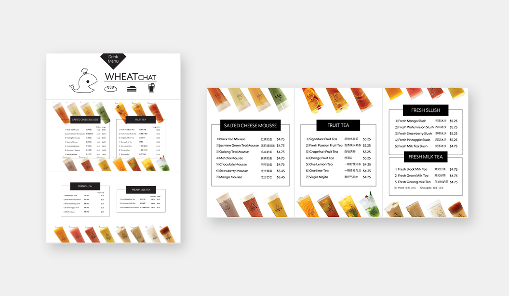

WHEATChat

Company: WHEATchat Bakery Cafe, Food and Beverages store
Position: Freelance Graphic Designer
Date: Apr 2016 - Sep 2018
Services: Branding, Logo Design, Graphic Design
The WHEATchat Bakery Cafe is a local business located in the west end of Vancouver, Canada that opened during the summer of 2018.

As a new business, WHEATchat Bakery Cafe needs a full set of branding designs including a company logo, storefront signage design, drink menus and cup design, before their official store opening.
In order to find the best design for the store, the owner and I had many exchanges where I would present some mockups and edit them based on the client’s suggestions.

Due to the client not wanting to hire a professional photographer, photos that were taken for the drink menus need heavy editing by trace cropping, adjusting white balance and colour balance, redesigning the lighting environment and many more other techniques to add consistency to each photo.


At the end of the project, I had designed the company logo, storefront signage, drink menus and cup design, all of which shared a pleasant minimalistic theme.
Sadly, however, The WHEATchat Bakery Cafe ended its business in 2019, with notable mentions on the Daily Hive as a cafe that “was known for its desserts, coffee, pastries, and the signature happy whale logo on its cups.”